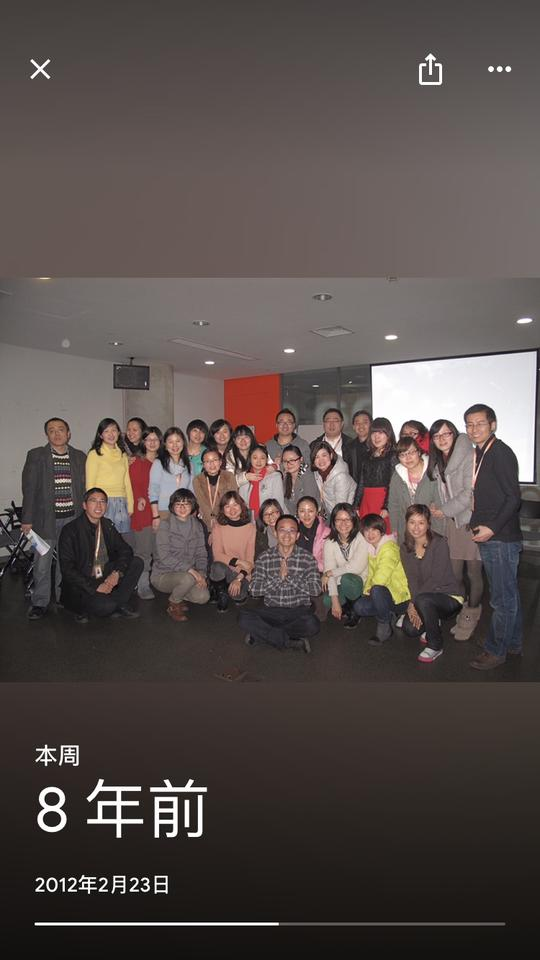
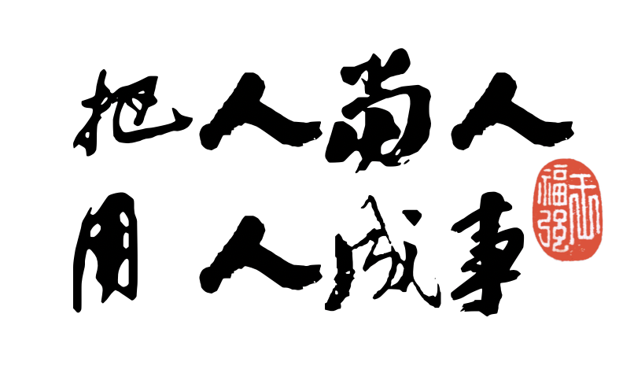

写给技术人的人性课
王福强
#扶墙老师苦口婆心讲道理系列#
在微盟筛库跑路发生的今天， 我偶然间发现了Google Photo给我推荐和回放了一张8年前的照片，感慨良多，遂决定码点儿字… 1

这张照片是当年在阿里巴巴滨江园区连续3天培训之后留下的， 关键不是过去了多长时间，关键是那个时间点，过了那个时间点，从此哥就不能算一名狂热的技术主义者了（I was a fucking pure techie at that time, in fact），这说不上是好是坏，但扩展了我对人和世界的视角，让我跳出了单纯的技术人的视角去看待这个世界和人群： 在此之前，我锋芒毕露，咄咄逼人， 老子技术牛逼，老子天下第一； 在此之后， 哈，原来，原来，我看到的世界和人的拼图是不完整的， 真tmd是个井底之蛙…
作为一名曾经的技术人（现在算挂张皮吧，hiahia），我能深刻感受到技术人在某些层面的偏执，尤其是越优秀的技术人越偏执， 这就跟性格一样，其实没啥绝对的好坏， 你可以说这种特质不好，比如不善言辞、说话难听、咄咄逼人让人不舒服、不善与人相处、脾气暴躁甚至让人害怕（当然，其它人群也不见得没有这样的人）， 但它也有好的一面， 比如专注、精益求精、不达目的誓不罢休、藐视权威、永远要跟同专业的人比高低等等。
但是， 作为一名过来的技术人， 我想跟现在的技术人讲，除了技术思维，大家也得慢慢去了解人性，这样才能帮助大家走得更远， 不止是职场上，更是在人生道路上。 “老兵不谈古，新兵就失谱！”, 这算是一名技术老兵的诚心建议吧！
做事，不要离人的直觉太远
今天冯大辉先生就某篇文章转载和评论了这么一句话：
投了这么多钱，还不如朋友圈管用。疾控中心主任高福是通过朋友圈发现的疫情。
每个人可能对这个事情都有不同的看法， 我的看法是： 很多东西要能用起来发挥作用，就不能离人的直觉太远。
我自己曾经甚至现在也经常写很多工具给自己用， 但每到关键时刻却总是转而求诸于微信等一两个高频的工具， 作为普通人的我尚且如此，那就更不要说你疾控中心花了多少个亿打造的什么预警平台了，起码我自己写的东西自己用，知道有啥，再多也就那么几个，但疾控中心这种内部系统，我想不但很多而且低频。你想想看，有那么多的系统，关键时刻难道还不是得看哪个人牛逼记得或者知道怎么让它们发挥作用吗？
所有的东西都是死的，人才是活的，死的东西永远需要活的人让它发挥价值然后拿到人想要的结果，所以，在设计和生产相应的系统和产品的时候，就得思考怎么让人临事更容易想起它、更快速的拿到它、更简单地使用它，产品经理天天琢磨的东西里面不就包涵这些吗？ 技术人也得想， 毕竟自己也参与了这些过程。
每个人都是普通人， 每个人都有认知负担，要拿到想要的结果，很多时候不在于技术或者系统做的有多牛逼，反而在于别把事情摆地离人性太远…
霸道总裁其实不完全霸道
我之前写过一篇《我是如何用机器人做催收的》，很多人留言说我是“霸道总裁”，其实，我认为我完全就不霸道。
我会考虑同学们的感受，所以：
- 我的“催收”机器人的头像用的是大多数男性朋友看到都会喜欢的异性图片；
- 我会私下face2face地去沟通“催收”的事项， 催收机器人发的消息，有些时候更多是给我自己的提醒，而不是让当事人难堪；
- 用的是“催收”机器人发提醒，而不是我的账号发提醒，否则，后者肯定会让大家有些压力或者强迫的性质，毕竟有点儿单向push的味道，所以会觉得我过于霸道；
所有这些都跟技术没有关系， 唯一跟技术有关系的地方就是我曾经的编码技能和运维技能帮助我构建了这么一套“催收”系统而已。
毕竟， 我的目的还是希望团队里的同学把那些“重要不紧急”的事情给做掉，而不是为了技术而技术，为了催收而催收，否则， 那些“重要不紧急”的事情就是一些定时炸弹，说不定哪天给我爆炸成“重要而且紧急”的救火事件，我毕竟还是要对团队负无限责任的嘛， 所以， 如果“让兄弟们开心舒服”就能够把事情做掉，干嘛要霸道呢？ 毕竟兄弟们是人， 不是0和1分明的bit机器。 事后也证明了， 兄弟们也很给力，把一些备份啦，镜像啦，都搞定了，最终把潜在的风险敞口都给close掉。
技术和事项摆在那里，但需要人去落实和执行， 你自己干不了所有的事情，就得组织兄弟们一起干，霸道，很多时候不解决问题，这是人性，与技术牛逼与否无关。
技术思维成就不了区块链产业
为什么说区块链？ 因为我发现很多技术人不分场景地狂热呓语，哪儿都能扯上区块链，就好像此前n多技术都被当成万金油一样， 其实这些人都是在干“没有自己跳进去切身体验”的“口活儿”，你如果真跳到事情里面去，甚至于没有跳进去但真得想清楚了，就不会觉得光一个区块链技术就能解决所有信用相关的问题，因为区块链永远是个工具，这个工具怎么用、怎么被用，都是由人来决定的，而人，才是成事的最核心的因素。一个心怀不轨的人把脏数据上链，你区块链上存了这种不可篡改的数据又有什么意义呢？
制度，流程以及文化等等，所有这些技术之外的东西再加上人的跟进，才是保证区块链可以按照正常预期去运转的保障（如果有必要上区块链的话）， 而这些，其实都处于很多技术人的认知盲区。所以，如果你是技术人，希望你多跳出技术再回头去看看整个事件图谱， 技术永远只是一个因素， 而成事，需要很多因素。
做产品的人都知道有句话叫“合理的部分是理性，不合理的部分是人性”， 嗯， 这个世界不是完全靠理性就能理解的，遇到不理性的事情，可以换到人性的视角再看看。
后话
技术人关注事物和原理比较多，关注人比较少，但人终究会成长，一旦你做了技术管理者或者领导者，那么就得多关注人了。
希望作为一名技术人，大家可以“少点儿技术思维，多点儿人性光辉”。
尤其是技术领导者和管理者们，天天讲“以人为本”，其实又有几个人真的认同并去践行呢？

以上，与诸君共勉~
我喜欢码字，但很多道理大家都懂的今天，我就觉得码啥字都没啥意思，遂码字也得看心情，毕竟，我不会为了公众号粉丝有啥KPI的压力，我就是要保留“想写的时候写写，不想写的时候不写”的自由，哪天优甲乐吃舒坦了，或许就来兴致了…↩︎
欢迎加入「福强私学」
跨越2190个日夜，始终坚持“实践 + 原创”打造的715125字专属知识库，囊括了（但不限于）从职场、技术、管理与商业等多个板块的内容。
- 一个ChatGPT触达不到的地方
- 一个带你超越AI/人工智能的地方
- 一个与你一起成长的地方

开天窗，拉认知，订阅「福报」，即刻拥有自己的全模态人工智能。